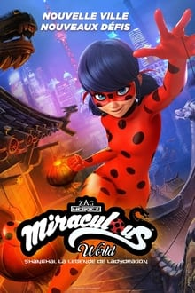

Joe Gardner é um professor de música de ensino fundamental desanimado por não conseguir alcançar seu sonho de tocar no lendário clube de jazz The Blue Note, em Nova York. Quando um acidente o transporta para fora do seu corpo, fazendo com que ele exista em outra realidade na forma de sua alma, ele se vê forçado a embarcar em uma aventura ao lado da alma de uma criança que ainda está aprendendo sobre si, para aprender o que é necessário para retomar sua vida.
Desde que se conheceram, em "Velozes & Furiosos 7", Luke Hobbs (Dwayne Johnson) e Deckard Shaw (Jason Statham) constantemente bateram de frente, não só por inicialmente estarem em lados opostos mas, especialmente, pela personalidade de cada um. Agora, a dupla precisa unir forças para enfrentar Brixton (Idris Elba), um anarquista alterado geneticamente que se tornou uma ameaça biológica global. Para tanto, eles contam com a ajuda de Hattie (Vanessa Kirby), irmã de Shaw, que é também agente do MI6, o serviço secreto britânico.

Uma detetive implacável se une a uma assassina que ataca os integrantes de uma quadrilha de tráfico de crianças.

Em Monster Pets (Monstros de Companhia), o cão Tinkles dá o seu melhor para arranjar um amigo

Um ano após a erupção de um vulcão subglacial, elementos misteriosos da pré-história emergem das geleiras derretidas. Prepare-se para consequências inacreditáveis!

Ladybug decide visitar seu tio em Xangai, mas quando chega a cidade acaba sendo roubada e os ladrões levam sua bolsa com o Tikki. Sem dinheiro e sozinha na cidade, a heroína aceita a ajuda de uma jovem inteligente chamada Fei. As duas então se juntam em uma grande aventura e descobrem e existência de uma nova joia poderosa.

Dezessete anos após ser presa injustamente, uma compositora talentosa busca justiça contra os homens que causaram sua queda e mataram sua família.

Os médicos do Grey Sloan Memorial Hospital lidam diariamente com casos e consequências de vida ou morte. É um no outro que eles encontram apoio, conforto, amizade e, às vezes, até mais que amizade... Juntos, eles descobrem o quanto a vida profissional e a pessoal podem ser complicadas e se misturarem no meio do caminho.

Desde que se conheceram, em "Velozes & Furiosos 7", Luke Hobbs (Dwayne Johnson) e Deckard Shaw (Jason Statham) constantemente bateram de frente, não só por inicialmente estarem em lados opostos mas, especialmente, pela personalidade de cada um. Agora, a dupla precisa unir forças para enfrentar Brixton (Idris Elba), um anarquista alterado geneticamente que se tornou uma ameaça biológica global. Para tanto, eles contam com a ajuda de Hattie (Vanessa Kirby), irmã de Shaw, que é também agente do MI6, o serviço secreto britânico.

O caos se instala no planeta depois que um acontecimento global neutraliza todos os equipamentos eletrônicos e acaba com a capacidade humana de dormir. Mas Jill (Gina Rodriguez), uma ex-militar com um passado problemático, pode ter a chave para a cura: sua própria filha.